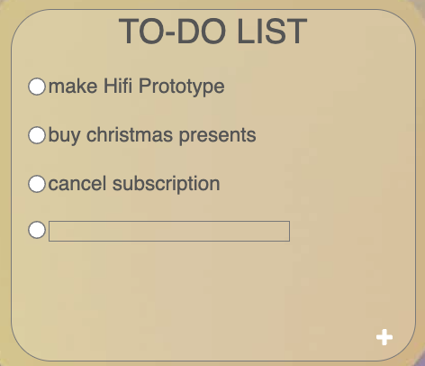
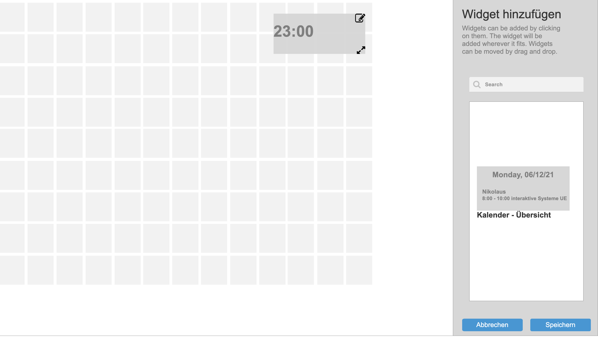

Virtual Desktop
Short Description
This was my first prototype I had to make for a course at Uni in my bachelors. The group project was to help users to have everything they use in one integrated system. The aim of this project is to come up with a virtual desk, where the applications and services that the user frequently needs and uses are gathered to be easily accessible. Similar to your physical desk where you put your laptop, your phone, pens, notebooks, headphones, and everything that you may need to access while working.
Screens of the prototype
Homepage of the application:

Detailed look at the ToDo Widget - it was possible to add new Todos:
More detailed look at the calendar, after clicking on a date you got to see the appointments of the day

It was also possible on another page, to add new Widget and readjust the order of the widgets of the virtual desktop
Screens of the finished implemented application
Homepage and the navbar of the application:


I have created a screen for messages so that we know if maintenance work is taking place or something good to know:

It should also be possible to add news:

The most important part was to make the user overview, to help us users to find users faster:

It was also a goal to make it easier and fast to add new users to the system